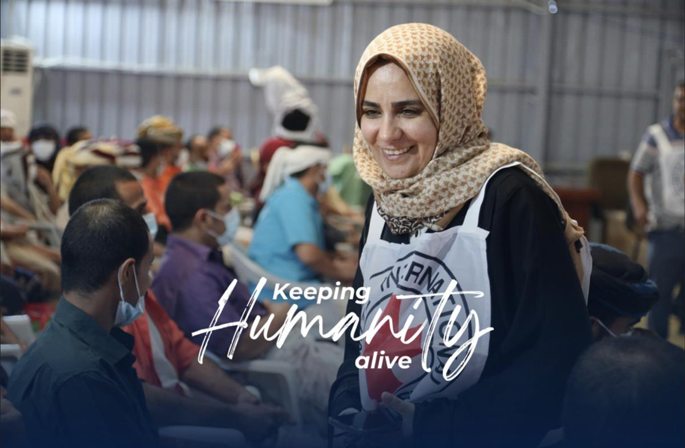

Tommaso Della Longa, IFRC spokesperson, at the organisation's headquarters in Geneva on 6 May 2024. (Geneva Solutions/Michelle Langrand)
ON SOURCE: GENEVA SOLUTIONS
PEACE & HUMANITARIAN IFRC PORTRAITPublished on May 08, 2024 05:00. / Updated on May 08, 2024 10:06.
‘Something is missing’: Speaking for the Red Cross in a polarised world
As the Red Cross and Red Crescent movement celebrates its humanitarian principles on 8 May, we speak to spokesperson Tommaso Della Longa about what it means to communicate about relief work in today’s fractured and crisis-hit world.
Explain, tell stories, raise awareness, relate the facts. The work of Tommaso Della Longa couldn’t sound simpler. But when you’re speaking on behalf of a 16 million-strong humanitarian network, no task is that simple. As the meaning of neutrality and humanitarian principles are increasingly questioned in sensitive humanitarian contexts such as Gaza and Ukraine, the spokesperson and manager of the media unit of the International Federation of Red Cross and Red Crescent Societies (IFRC) has to choose his words carefully.
“You have to have this continuing balance on which words to use and for which purpose because at the end of the day, communication is a tool for something else,” Della Longa told Geneva Solutions – whether it is getting aid to enter the north of Gaza or into Sudan.
“The reality is that we have guiding principles, and these principles are most of the time the difference between life or death for our volunteers who are on the front line.”
It wasn’t always like that. Before entering the humanitarian sector and settling in Geneva, the Rome-born Italian was a war photojournalist, driven by colliding passions for travelling and storytelling. Whether it was a female boxing club in Belfast for Catholics and Protestants or an NGO using football to reintegrate child soldiers in communities in North Kivu, stories that shone a light on a sea of suffering drew him to some of the world’s most complex contexts. “It's amazing how humanity in general has such strong resilience and how opportunities can be built from nothing,” says Della Longa, now 44 years old.
That also pushed him to travel to Palestine in his early 20s. “It’s a complicated context,” he says, reluctant to say much about such a sensitive topic. He shares one memory that stuck with him: a visit to Hebron, a city in the West Bank, half of which is under Israeli occupation and where the separation is not only horizontal but also vertical. Nets above separated Palestinians who were allowed to circulate in one street, from the levels above where settlers lived. Later, Della Longa would return to the city with the Italian Red Cross to visit its psychosocial centres using photography, painting, sports and other activities to keep children away from criminality – once again, a ray of hope amid all the suffering.
His career finally took a turn in 2008, thanks to a job interview with former IFRC president and Italian Red Cross president Francesco Rocca. It was the early years of social media. Facebook and Twitter had been just launched a few years earlier. Rocca presented Della Longa with a challenge: build the Italian Red Cross’s communication department from scratch. “There was no press office, no social media, no resource mobilisation, no spokesperson… nothing!” he recalls. He accepted without imagining that after only 20 days on the job, on New Year’s Eve, he would be on a flight charting away unaccompanied minors from the Italian island of Lampedusa, where migrants were arriving by the thousands after making the treacherous journey across the Mediterranean sea.
To his surprise, his new mission wasn’t all that different from his years as a journalist: “Being able to tell that story that no one wants or is able to hear.”
Shifting focus
The world of humanitarian communication was also being rocked by existential questions around the same time that he took up his first role at the IFRC. Donor fatigue was setting in despite soaring humanitarian needs, and there was increasing criticism around how organisations portrayed human suffering to trigger solidarity and fundraising. In 2014, the Syrian refugee crisis, during which Dellalonga was tasked with coordinating communications from Beirut, Lebanon, offered an opportunity to turn the focus on people rather than the Red Cross brand. “I decided to use International Women's Day to talk about the Syria crisis and collected in all the (neighbouring) countries stories of women enduring the crisis in a positive way,” he says.
“This image of people affected by a crisis, always depressed and always desperate, and only focusing on needs is not necessarily right; it is much more than this. People can relate more easily to a woman who decided to open a shop in the middle of the desert in Jordan to send her two children to school than just say people in Syria are dying,” he said.
Stuck in between
Ten years later, the communications landscape has been further thrown into disarray, not because of the fast-changing technologies and the explosion of social media use but by an unseen polarisation of public debate, according to Della Longa. For the seasoned communicator, the fast and short media cycles caught in a feedback loop with social media have left little room for “nuance and debate”. Multilateral organisations and even renowned symbols such as the Red Cross, which used to be taken for granted, are now questioned, he said, with Covid, climate change and international conflicts fueling mistrust in those longstanding institutions. The growing tide of fake news, at times spurred by political agendas, has also fed the defiance.
Read more: Future humanitarians must adapt to the shift in vulnerability
For Della Longa, offline action at the community level can be part of the remedy. “You don’t need to lecture people. You need to engage, trust and find a solution together, and the Red Cross and Red Crescent volunteers are uniquely positioned for that,” he says. Covid was a prime example of that, where Red Cross societies helped bring care to communities. “It's important to fly in vaccines, but then you need someone to take them to the communities,” he says.
That doesn’t mean humanitarian organisations should shy away from digital tools that can help spread awareness, for example, through Twitter or TikTok videos of their doctors and volunteers. The downside is that such personal exposure can also come with a lot of attention and scrutiny, which is not always done in good faith. In a world where everyone is asked to have an opinion, humanitarians have to tread a fine line to avoid seeming like they are picking a political side.
Della Longa accepts that as “part of the game”. “Even when we are getting attacked, I think it is a good reality check, and could even be an opportunity to do better,” he reflects.
Feeling the pressure
The last seven months of war in Gaza, following Hamas’s attack on Israel and Israel’s retaliatory military campaign, has been a particularly challenging situation. Due to the sensitivity of the issue, the IFRC has designated a few voices with the knowledge of the context to speak publicly for the organisation. Della Longa is one of them. He stresses that the federation’s role is to act as a “megaphone” for national societies overwhelmed with the emergency. “When you have colleagues from Magen David Adom (MDA) killed in a Kibbutz or a Palestinian Red Crescent volunteer in an ambulance being hit, you feel the pressure,” he concedes. Four MDA and 18 PRC volunteers and staff have been killed since 7 October.
While such casualties are part of a sad reality in the movement, it is understandably unsettling for the humanitarian movement. “The idea that our emblems cannot protect our colleagues is really shocking, and we cannot get used to it,” he says.
But one does not need to go as far as Gaza or Sudan, he says, referring to a centre recently established by the Italian Red Cross for health workers increasingly targeted since Covid. “It is clear that something is missing,” he says, adding that it is sparking much-needed conversations about how to “better disseminate our principles”.
But that doesn’t mean, Della Longa stresses, that all the responsibility falls on the shoulders of the humanitarian community. “We need to be clear. We can alleviate suffering. We can save lives. But political issues need to be discussed at the diplomatic and international level, and governments need to take responsibility,” he says.
ON SOURCE: GENEVA SOLUTIONS
